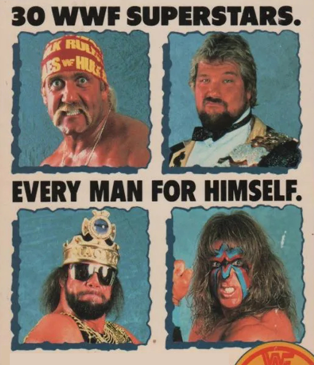
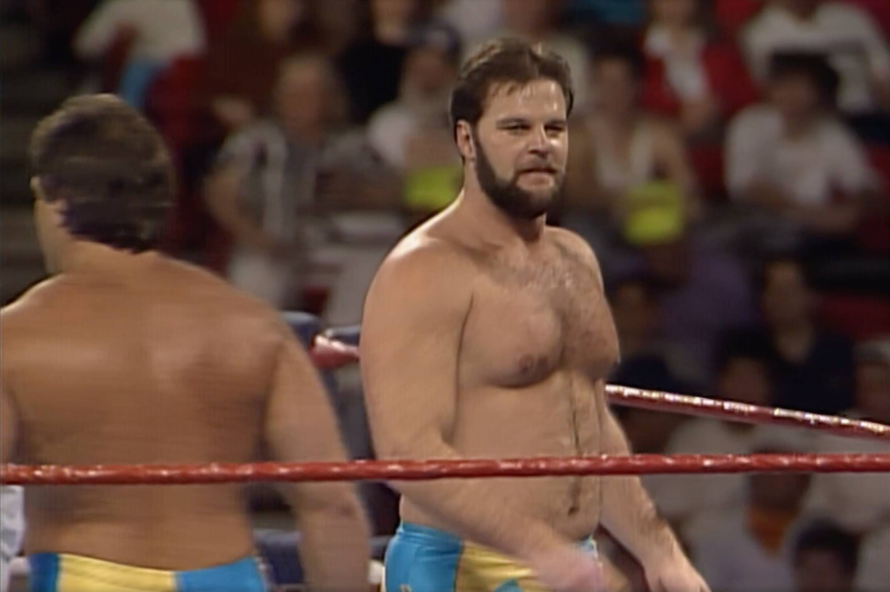
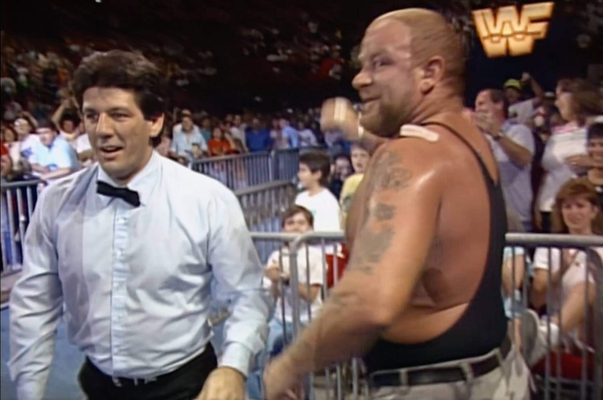
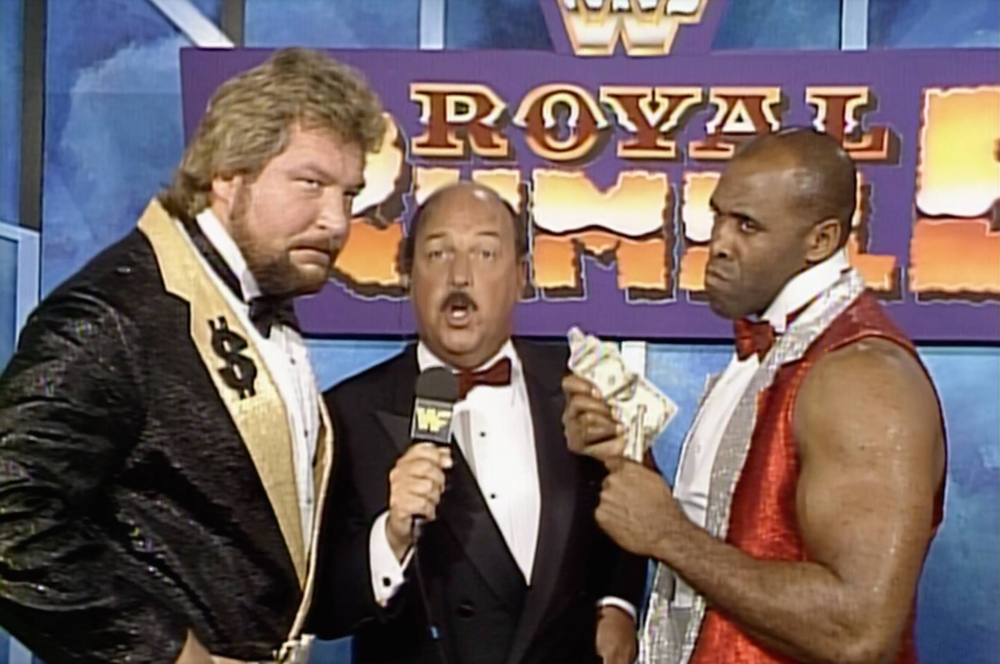
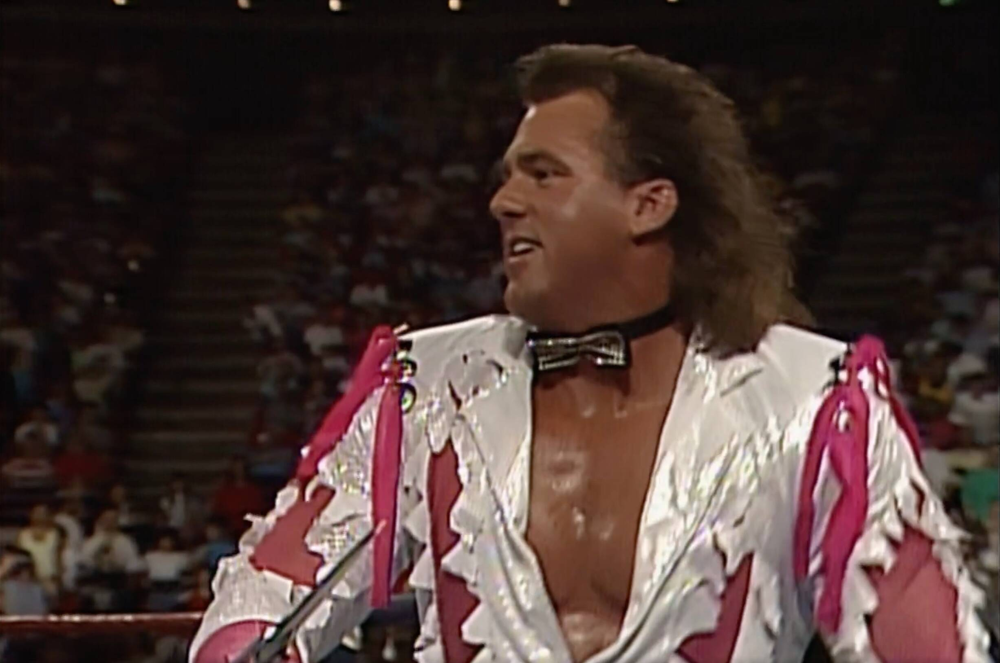
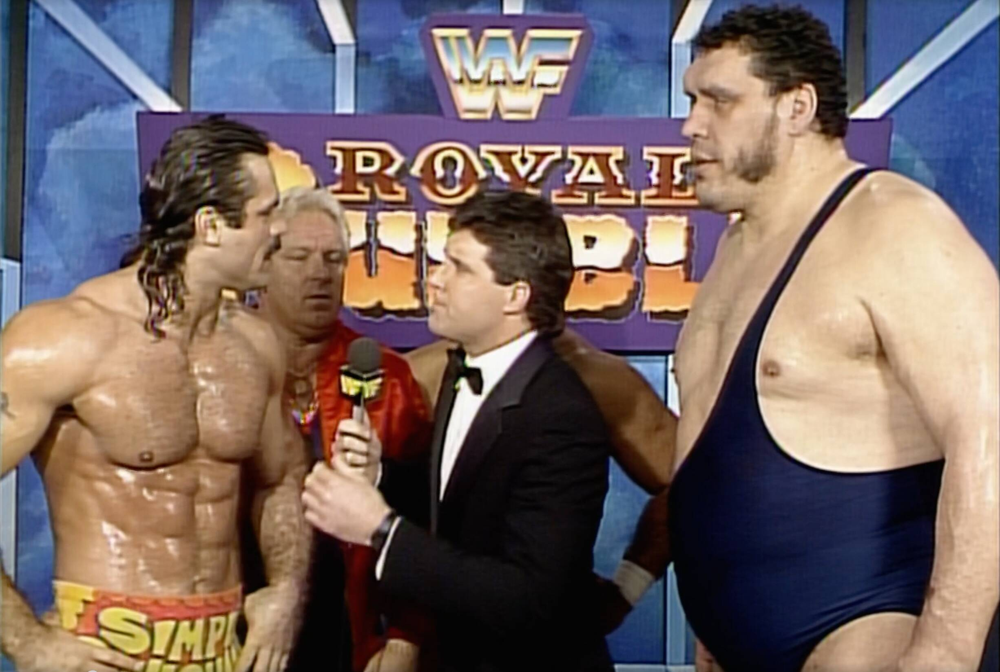
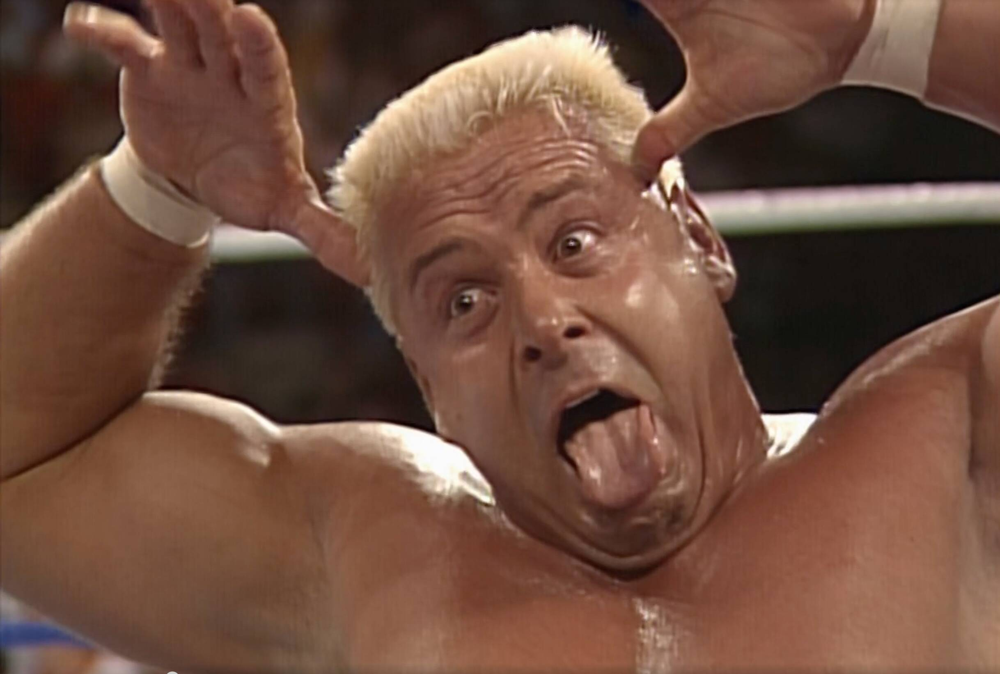
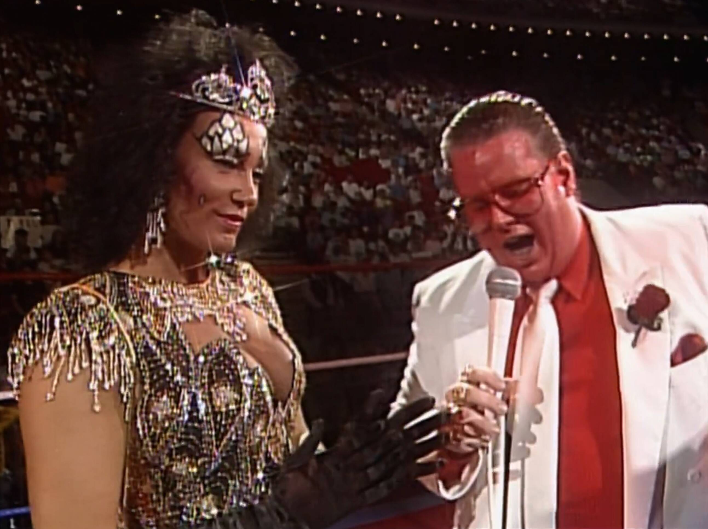
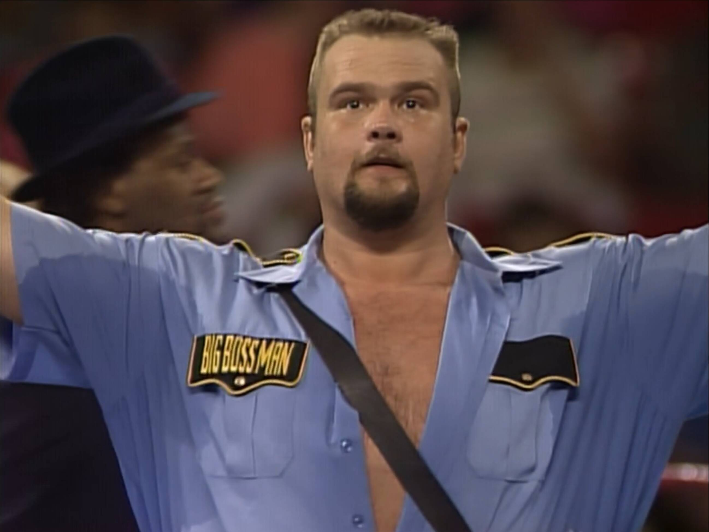
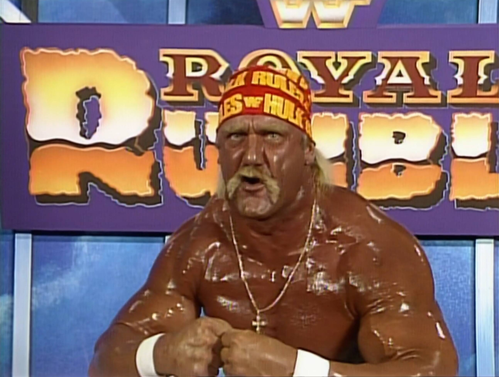

Royal Rumble 1990
The Event Where Everything (and Nothing) Happened

💡Find all my Royal Rumble 1990 gifs here on Giphy.
The Royal Rumble of 1990 was everything you’d expect from WWF in this glorious era. It was over-the-top, chaotic, and sprinkled with enough mullets and outrageous fashion to make even the most seasoned wrestling fans cringe with joy. Let’s dive into this wild ride, match by match, and embrace the glorious absurdity that was the Royal Rumble 1990.
Watch along notes
As with all my reviews (sarcasm aside) I always start with a positive mindset (i.e. “this is going to be awesome, I’m going to love watching this”). I think a lot of reviewers have a preconception of whether something is going to be good or not (based on their memory of the event or just the more internet-recent comments on these old events) and they let that affect their review. When really they should watch the event back like they were kids and try to recall the things they loved about wrestling. I try the best I can to suspend disbelief, although I’m guilty of being a smart mark at times.
Intro
Watch along notes
- Great opening with Vince’s voice roaring out each competitor’s name.
- Love the old school visuals of all the wrestlers in-action while this happens.
- The crowd is very excited for this event! They can be a bit up and down, but for the most part they’re HOT for the Rumble.

Paul Roma vs. The Brooklyn Brawler (Dark Match)
Before the main card got underway, fans in attendance were treated to a dark match featuring none other than the legendary (okay, “legendary” might be pushing it) Paul Roma taking on The Brooklyn Brawler. Ah, the Brawler — the guy who turned losing into a craft, if not quite an art form. Roma snagged the win, though let’s be honest, it probably didn’t make anyone’s highlight reel. It was the kind of warm-up match that whispered, “Hey, the only direction is up from here!”
Watch along notes
- This was a dark match so I didn’t get to see it (thank God!).
The Bushwhackers vs. The Fabulous Rougeaus (with Jimmy Hart)
Next up, we had The Bushwhackers — the kings of chaotic, arm-swinging fun — taking on The Fabulous Rougeaus, who were, let’s face it, more “fabulous” in their matching outfits than in their chances of actually winning. Jacques and Raymond did their best to bring some French-Canadian class to the ring, but that went out the window once Luke and Butch started licking everything in sight and flailing their way to victory. It wasn’t technical, it wasn’t graceful, but it was weirdly, inexplicably entertaining.
Watch along notes
- The Rougeaus are great heels.
- I didn’t understand why when I was a kid, but as an adult I totally get it.
- Man oh man do these people LOVE the Bushwhackers.
- I should add that Jacque looks strange sporting a full beard.
- This is the only time I recall him having one and it looked so odd
- A bit like a child had glued on a fake beard to their face to make themselves look grown up.
- Jacque also looks a bit out of shape, but that said this is the end of their run in the WWF.

- Match begins, as you would expect, with LOTS of silly antics and biting (they wouldn’t stop with the biting).
- The crowd goes nuts whenever Jimmy Hart gets attacked. He was so good for getting heat. I love it.
- This was a long match but to be fair it wasn’t that bad! It was in fact quite entertaining.
- When the Bushwhackers win the crowd erupts with joy. This crowd is digging it.
- Seems like everyone has forgiven (i.e. forgotten about) Danny Davis the crooked ref from 1987.

Post-match
- Before we move to the next match we get a Million Dollar Man interview.
- Funny hearing Mean Gene give Ted grief about not being able to buy the number 30 spot again this year.
- Ted then messes up and says “opportumity” 🤣

Brutus Beefcake vs. The Genius (Double Disqualification)
Ah, what a showdown this was. Brutus “The Barber” Beefcake — clippers in hand, haircuts on the brain — faced The Genius, whose poetry and bedazzled robes were sharper than most of his in-ring moves. This was a battle of flair over, well, anything resembling substance. Naturally, it ended in a double disqualification because, honestly, what else were we expecting? Beefcake tried to sneak in a post-match trim, but The Genius narrowly escaped, leaving Beefcake to solidify his status as the WWF’s resident barber-with-a-grudge.
Watch along notes
- The crowd HATES the Genius. He’s got some good heat here.
- Unsurprising really considering his gimmick.
- I never liked the Genius, not because he was a heel but because he was boring.
- Unfortunately, watching this back as an adult hasn’t improved the situation.
- Brutus’ music hits and out he comes cuttin’ and struttin’ and the crowd goes wild.
- It’s been said on various shoot interviews and podcasts before, but Brutus is MEGA OVER!

- There’s been a lot of great crowd shots so far. Really cool getting high views of the packed out arena.
- Now I’m an 80’s kid so I’m not sensitive, but Brutus making fun of the Genius being gay would not fly today.
- The Genius plays up the camp character and I just find it irritating.
- It’s really affecting my enjoyment of the match.
- End of the match Brutus cuts the Genius’ hair and I recall Macho Man (his real-life brother) was HOT about this.

- Apparently Brutus cut a little too much off and Randy thought he had taken advantage of his brother.
- And here comes my hero, my fav heel Mr. Perfect to save the day.
- Oof, those chair shots to the ribs actually look pretty nasty.
- I loved Perfect’s outfit but always hated when the arrow on the back had split colours (just looked shit).
- I’m glad this match is over.
Post-match
- Before we move to the next match we get a Heenan Family interview.
- We get Ravishing Rick Rude (him and Perfect were my favourites) and The Colossal Connection (Haku and Andre).
- Heenan is hilarious trying to stop everyone fighting over who will win the Rumble.
- Rude is in phenomenal shape, the best I’ve seen him.

Ronnie Garvin vs. Greg Valentine (with Jimmy Hart)
Now, here’s one for the “pure wrestling” fans — or at least those who enjoy watching two guys beat each other senseless. Ronnie Garvin and Greg “The Hammer” Valentine delivered a slugfest so intense it had you wondering if they were trying to wrestle or just see who could bruise the other faster. High-flying moves? Nope. Fancy maneuvers? Forget about it. Just endless chops, punches, and leg locks. After what felt like hours, Garvin finally got the win, leaving Valentine to lick his wounds and probably schedule an appointment with a chiropractor.
Watch along notes
- Now I’m really going to try and enjoy this if I can. On paper it sounds like garbage though 😬
- You gotta remember at this time the WWF had so many cool characters. Ronnie nor Greg had any character/personality.
- Of course The Fink has to explain the rules of the submission match.
- Shame the wrestlers weren’t paying attention because for some reason they keep forgetting.
- To add to the drama Ronnie is wearing a “Hammer Jammer” (a shield around his leg to protect against the Figure 4 leg-lock).
- The crowd is noticeably quiet!
- Yup, you guessed it, each wrestler attempts pin-falls multiple times during this “submission” match 🤦
- On the plus side they beat the living piss out of each other (that’s old school wrasslin’ for yer).
- It’s all for naught though as the crowd just doesn’t care.
- If the crowd wasn’t dead then this match would be better because of the stiffness and brutality.
- The constant pin attempts is actually getting a bit annoying now.
- Interestingly, right at the end the crowd FINALLY gets into the match.
- Maybe it’s the promise of an end in sight.

Post-match
- Before we move to the next match we get a Mr. Perfect interview (YES!).
- Interestingly Mr. Perfect comes across as a hero for saving the Genius (which makes sense to me).
- I mean, think about it… Brutus is a bit of a dick for taking advantage of people when they’re asleep.
- Of course Mr. Perfect pulled the “perfect” number.
- Not sure if Mr. Perfect is trying out some new schtick but the hair throw seemed a bit out of place and weird (I mention this as I’ve seen him do it a few times before during interviews and promos).

Brother Love with Sensation Sherri
Watch along notes
- Brother Love was one of those characters I used to find so boring, but I would love the guests on his show.
- I definitely enjoy watching him more now as an adult but he can still be a bit grating sometimes.
- Out comes Sherri who just looks smoking hot. Wow. As a young boy watching this… less we say the better.

- But seriously, Sherri was an INCREDIBLE talent. She could work, she could talk, she could bump her ass off. One of the best without question.
- I loved her gimmick with the Macho King. Those two went so well together because they’re both nuts!
- Out comes Sapphire and the crowd pops initially but quickly chills.
- Brother Love and Sherri bully Sapphire for the next 5 minutes which loses its humor after a while.
- Of course Sapphire has enough and batters Sherri and in runs Macho King (my man).
- The crowd cheers for her slap.
- The hot pink and baby blue colours Macho is wearing is epic! Pure nostalgia.
- Big dust comes out but doesn’t manage to grab Macho.
- But Brother Love gets what’s coming to him.
- Oof, Brother Love gets thrown out HARD and FAST!

- The crowd is eating up Dusty and Sapphire dancing. It is good fun (especially with the music). I’m into it.
- LOL to Jesse’s comment “don’t we have an interview we can go to”.
Post-match
- Before we move to the next match we get interviews with both Hacksaw and the Boss Man.
- Hacksaw can barely speak (he literally trips up over himself) and yet he makes it work as part of his enthusiastic character.

- Although it’s a bit of a hokey interview, kids of the time will love it because it’s an infectious sort of energy.
- I’m kinda thankful that it’s a short promo.
Jim Duggan vs. Big Boss Man (with Slick) - Disqualification
Hacksaw Jim Duggan and Big Boss Man: a 2x4-toting patriot versus a nightstick-swinging enforcer. It was every bit as loud and brawly as you’d expect. Between Duggan’s chants of “HOOOO!” and Boss Man’s no-nonsense scowls, this match delivered exactly what it promised — not much in terms of rules, but plenty of action. Duggan picked up the win via disqualification (because, let’s be real, the rules were never the main focus here). Boss Man kept his pride, his nightstick, and, let’s assume, his ability to intimidate people with just a glare.
Watch along notes
- We hear the amazing theme music for the Doctor of Style “Jive Soul Bro”.
- Wow, the Boss Man has SWEATED out his shirt. It’s like two rivers coming out his armpits.

- Duggan is mega over. It’s a shame his character from 1988 died after the incident with The Shiek. He could have been HUGE.
- HOOOOOOOOOO! This match is all about that one call.
- I definitely appreciate Duggan more now than as a kid. I thought he was a bit boring when I was little.
- What people don’t realise is that Duggan from 1988 is actually different from the Duggan of 1990.
- It’s not a MASSIVE difference but the character became very dumbed down to the point that he just became a joke.
- In 1988 he was seen more as a ‘common man’ and was a real threat. The Duggan here is just a goof ball (bit sad).
- Now this is actually quite a stiff match with some good hard bumps.
- I like that the ref is just letting them go at it.
- Shame that Boss Man would turn baby face after this as I loved heel Boss Man and hated the goody two-shoes.
- He also became thinner as part of the baby face turn.
- I much preferred the fat version from 1988-1989 because he was much more scary and seemed more dangerous.
- There’s not much screen time for Slick, which is a shame because he’s awesome.
- Hmm, the match has really slowed down now. It probably could do with being shorter.
- Oof, this bear hug is killing the pace and my mood.
- Interestingly the crowd is coming alive again, they’re dedicated for sure!
- Boss Man gets disqualified. That’s a lame ending.
- I always loved how Boss Man twirls his nightstick. Just looked badass.
- Of course Duggan still gets over with his 2x4.
- The crowd goes nuts when he nails the heels.
- Duggan genuinely looks to be happy to be here and is smiling at the crowd, which was a nice camera shot.
Post-match
- Before we move to the next match we get a bunch of promos from the superstars participating in the Rumble.
- Oh boy Dino Bravo is such a shit promo guy. Absolute hot garbage.
- I love seeing Earthquake as his original incarnation: The “Canadian” Earthquake. Pure nostalgia.
- Demolition next and they’re always fun to watch a promo for.
- I always liked Bad News Brown’s promos, especially his bulging eyeballs gimmick.
- Awesome Dusty Rhodes promo. So much fun.
- The Rockers are ALWAYS a shit promo and they totally just killed the surprise aspect by letting everyone know they’re not going to fight each other (clearly they’re too far apart in the draw and on top of that they don’t expect to be in there long enough to see each other).
- Also the camera lingers too long and you see Marty look to his side and his smile starts to drop as he waits for someone to shout CUT.
- Hercules isn’t horrific but definitely a bit naff. He looks swollen, and I love his fuck up: “rumble royal”.
- I loved The Model Rick Martel gimmic. Such a great heel, but that mullet was so bad.
- Tito is a shit promo. I appreciate his in ring talent more nowadays as an adult, but he sucked at promos.
- Wowza, Jimmy Superfly Snuka didn’t half talk some crazy shit.
- Akeem is just happy to be there and I love hearing slick talk.
- oh god, as a kid I would have lost my mind at seeing the Ultimate Warrior. But as an adult, I’m dreading it and his stupid rambling. That said his hair looks great today! This is all about Hulk Hogan and WrestleMania 6.

- The Macho King is such a bad ass gimmick/character. His crown and glasses are just epic (so colourful).
- I loved the Powers of Pain as a kid. But their promos show how important a manager (Mr. Fuji) is to their success. Even if he doesn’t do that much and just cackles.
- Jake the Snake cuts a good promo, really selling the challenge of the Royal Rumble. I love his line “Now that sounds a lot like me”.
- The Hart Foundation is the classic promo where the Anvil is just going nuts and Bret Hart tells him to “mellow out”. The Anvil’s laugh is just so iconic.
- Oh boy, I really do LOVE the Honky Tonk Man gimmick. So so so good. The line
“I’m gonna play 29 hits and lay down some mean tunes”
:chef-kiss:. - Hulk promo: tanned ✅ greased up ✅ bicep veins popping ✅ “HULK RULES” bandana ✅ this is it boys and girls: nostalgia! But in reality… his eyes look tired man, especially when they zoom in. He needs a rest. Gotta love the line “rumbles all over you”.


The Royal Rumble Match: Hulk Hogan Stands Tall… Again
And now, the big one: the Royal Rumble! Thirty men entered the ring, each with dreams of glory and at least one dramatic flex for the cameras. Alliances were formed, betrayals unfolded, and chaos reigned as the wrestlers jostled for dominance. Then, as if on cue, Hulk Hogan entered, and the mood shifted. You could practically hear the “Real American” theme as Hogan started tossing opponents left and right, many before they’d even had time to finish posing.
The final clash came down to Hogan and Mr. Perfect. Credit where it’s due: Perfect gave it his all, landing some impressive dropkicks and smirks. But this was Hogan’s world, and with one mighty throw, he sent Perfect flying over the ropes and claimed victory. Cue the posing and flexing, because if there’s one thing Hogan does better than winning, it’s reminding everyone just how much larger-than-life he really is.
Watch along notes
- YES. The feels when the fink says “It’s NOW TIME for the ROYAL RUMBLE!!” and hearing him explain the rules. This is a CORE MEMORY and integral part of my childhood.
- Wait, wat!? No music??? Bit underwhelming for the Million Dollar Man’s entrance.
- Interestingly the crowd is sort of dead at this point? Maybe because there’s no music to hype them up?
- The Birdman’s music hits (that’s more like it) and the crowd perks up (this shows the importance of music in the presentation!)
- Man, Koko is so small but stocky as Hell.
- His blonde hair and face paint looks awesome, that was a nice evolution for his character.
- Koko’s out here just calling spots right in front of the camera 🤦
- Koko is an idiot with his elimination. Why just run straight at the bad guy leaning on the ropes? From a Kayfabe perspective I just don’t understand why he would take that kind of risk?

- The crowd goes nuts for Marty Jannetty’s music. Classic yellow tights too (reminds me of the Rockers Hasbro figures).
- What I love about this rumble is that the managers were allowed to stay at ringside.
- Early Rumbles were great because you really got to see two wrestlers match up who otherwise NEVER would have on TV or in other PPV’s (like a tag team wrestler going up against Hulk Hogan).
- Marty has the same stupid elimination and jumps at the ropes.

- The crowd goes bat shit crazy for Jake the Snake’s music (understandable as it’s so epic).
- LOL, he heads straight outside for a bodyslam to the floor.
- Here comes the Macho King and oh boy am I getting all the nostalgic feels.
- Cool (and interesting) to see Shane McMahon as a ref outside of the ring.
- Macho’s Hawaiian tights are so nuts and unusual, even for him.
- The crowd cheers for Roddy Piper’s entrance. It’s not a massive pop, not like Marty got, but they’re definitely happy to see him.
- I never really cared for Roddy. Just found him annoying when he talked and cut promos and nothing about his character/gimmick was interesting to me.
- Piper keeps looking behind him as he’s clearly planning a spot where he and Jake bump back to back into each other and pretend for a moment like they could end up fighting.
- Sherrie screaming like a maniac outside. Earning her pay cheque.
- The Warlord with Mr. Fuji arrives and you start to notice already how crowded the outside is with managers.
- The Hitman arrives in all pink (top and bottom) looking cool AF.
- Just look at all the colours in the ring. Pinks, blues, greens, oranges and more. It’s just such colourful characters.
- Bad News Brown gets some serious boos when he arrives.
- Bad News goes straight for Bret like he’s still upset at their rivalry from 1988!?
- Macho King eliminates Jake. Just think of the back and forth those two have had over the years, and will have in the coming years.

- The crowd ERUPTS for Dusty Rhodes and of course he goes straight for the Macho King.
- Andre comes out and looks seriously menacing. Although… he struggles to even get into the ring.
- The Warlord does the job for Andre big time by bumping like a beast for him (made Andre look so strong when clearly he could barely move or work at this point).
- It’s funny watching Bobby Heenan and Mr. Fuji arguing about Andre eliminating The Warlord. That’s good shit.

- The Red Rooster gets zero reaction. Standard.
- Demolition Ax arrives to a reasonable reaction and he chops down Andre.
- Haku arrives with his classic Hawaiian tights. Nostalgic feels.
- Ax is a long-time friend of Andre so it’s interesting to see Andre being so generous to Ax in the ring.
- Smash arrives almost unnoticed!?
- Akeem arrives and the first thing I notice is his long hair and he just looks really odd with long hair for some reason. But straight out the gates he’s bashing Andre! I definitely didn’t expect that.
- Demolition eliminates Andre and the crowd goes nuts.

- Superfly arrives and immediately eliminates Akeem.
- LOTS of Superfly “oooh oooh oooh” chants from the crowd. They’re into it.
- The Earthquake finally arrives. Time for some beef.
- …and boom Dusty and Ax are thrown out by Earthquake!
- Million Dollar Man still in there battling on. He’s going for a record.
- Anvil and the rest of those in the ring immediately work to get out Earthquake and holy shit it looks like Dino Bravo (his buddy) was the final hand to throw him out! Nothing is ever said of it though?

- The crowd goes NUTS for the Warrior and his elimination of Dino Bravo.
- The Warrior fucks up a spot because he wasn’t paying attention to people in the ring. He tried to throw Haku into a corner where wrestlers were and he stopped and didn’t know what to do.
- The Model struts out. Give him a year and he’ll make a Royal Rumble legend of himself.
- Haku eliminates Smash with a nice crescent kick.
- Here comes Tito coming for The Model. I’ve really come to appreciate him over the years.
- Virgil spotted cheating and keeping Ted in. Good heat there. Great booking.
- Honky arrives. What a set of characters in this rumble!
- The Warrior finally dumps out Ted with a big clothesline.
- The crowd ERUPTS for Hogan (surprise surprise).
- Snuka is straight out by Hogan.
- Hogan still has his bandana on while he dumps out Haku.
- Hogan and Warrior are about to be the only ones left in the ring. Surely the crowd can see what’s coming? The anticipation must be growing in the audience…
- I’ve not tracked the time but wow this is a looooong “2 minutes” while we wait for someone to come out.
- Oh, ok, here comes Shawn Michaels lol. Too bad, thrown straight out by the Warrior.
- It’s time. Hogan and Warrior. Everyone is very much into this!

- Lame double clothesline to get out of anyone having to lose to the other and lose their heat.
- BEEEEEF. Barbarian trots down to the ring and is just nailing both downed opponents.
- Rick Rude suddenly jumps into the ring out of nowhere and no countdown, the crowd is silent in their confusion. Must have been a fuck up sending him out early.
- LOVE Rude’s tights here btw. Awesome nostalgia.
- Rude has never looked better!
- Hogan the forever heel helps eliminate the Warrior! and kayfabe would have you believe it was an accident.

- Jesse is ALL OVER THIS on commentary. Good! Hogan the mega-heel.
- Hercules is in. Wearing his old babyface blue trunks. Man desperately needs a tan!!
- Hulk stealing Hercs gimmick (the grab your head and shake your whole body hype up thing) or is that Herc stole Hogans? I’m not sure who did that more 🤔
- Hogan with a back rake on Rude. Seriously dude, what a dirty heel tactic!?
- Here comes my boy Mr.Perfect.
- Perfect wearing a beautiful orange singlet with the black triangle on the back. Classic.
- Barb goes out far too easily thanks to Herc. Embarrassing really.
- Rude nails Herc out of the ring.
- My two favs Perfect/Rude double teaming together but out goes Rude.
- I already know Perfect is going to try a Perfect Plex even though it’s a stupid thing to do (kayfabe would has us believe it’s to soften up Hogan).
- Why Hulk gets Perfect IN the ring rather than out I don’t know.
- Perfect over selling the post hit like he always did (professional, making sure Hogan got over).
- Perfect takes a super dangerous bump out via the corner post.

- HOGAN MUST POSE!
- The fans are eating it up.

The Aftermath: Nostalgia Wrapped in Madness
Royal Rumble 1990 was a perfect snapshot of WWF’s golden era. It had everything: wild characters, disqualifications galore, and more flexing than a Gold’s Gym commercial. And sure, it’s easy to poke fun at the absurdities, but that’s part of the charm. Wrestling wasn’t about strict rules or technical prowess back then; it was about heart, spectacle, and the sheer thrill of seeing who would come out on top.
Hogan’s victory, Beefcake’s scissors, The Bushwhackers’ antics — they all painted a picture of a time when wrestling was less about corporate scripts and more about characters who were both ridiculous and beloved. And we miss that, don’t we? It was an era where you could be a patriotic lumberjack or a poetic genius and still find yourself center stage, battling it out in front of a crowd that loved every second of it.
So, let’s raise a metaphorical 2x4 in salute to Royal Rumble 1990, a night when the only thing that mattered was how loud the crowd cheered and how big the personalities clashed. These matches, these moments, they’re etched in our memories not because they were perfect, but because they were a blast. And isn’t that what wrestling is all about?